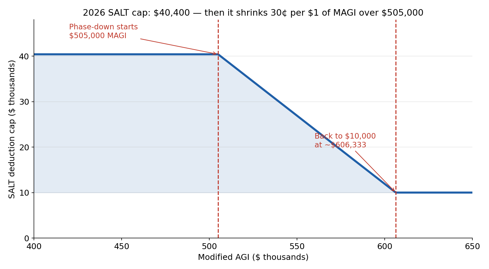
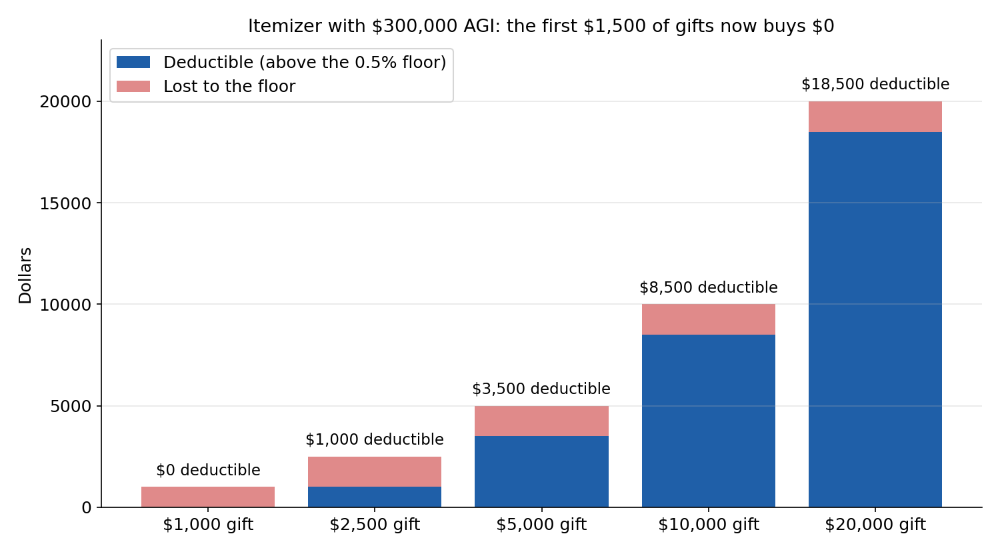
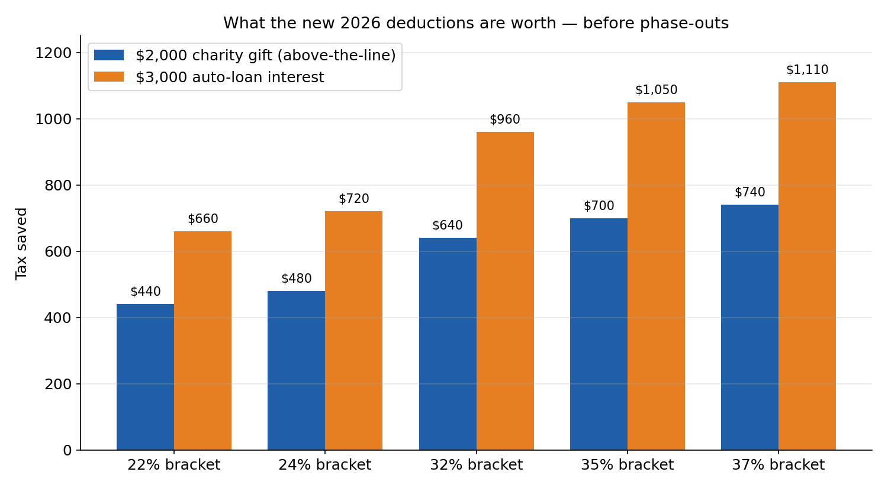

Two weeks ago this series ran the mechanical year-end checklist: top up the 401(k), route the HSA through payroll, decide on a Roth conversion, harvest losses, bunch charity, close the RSU withholding gap. Every one of those moves still works. What changed is the law underneath them. The One Big Beautiful Bill Act (OBBBA, signed July 4, 2025) rewrote the 2026 tax rules — the SALT cap quadrupled, charitable giving got a floor, four brand-new deductions appeared, and the value of itemizing got a haircut at the top. This is the first tax year under the new law, and the decisions that use it have to be made before December 31, 2026, not in April.
All figures below are for tax year 2026, from IRS Revenue Procedure 2025-32 and Public Law 119-21.
Move 1: Re-run itemize vs. standard — the SALT cap is $40,400 now
The headline change: the state and local tax deduction cap rose from $10,000 to $40,400 for 2026. If you pay California income tax plus property tax, this is the single biggest change in the law for you — and it is also the most misunderstood, because the raise phases out.
The cap is $40,400 up to $505,000 of modified AGI. Above that, it shrinks by 30 cents for every dollar of MAGI, until it hits the $10,000 floor at about $606,333.

Worked example: a couple with $450,000 of MAGI pays $38,000 in California income tax and $7,000 in property tax — $45,000 total. Under the old cap they deducted $10,000. Under the new cap they deduct the full $40,400. The extra $30,400 of deduction, at a 32% marginal rate, is $9,728 of federal tax saved.
The same couple at $550,000 of MAGI gets a cap of $40,400 − 0.30 × $45,000 = $26,900. At $606,333 or above, the cap is $10,000 again — the raise is worth exactly zero. If your household AGI is anywhere near $1.7 million, do not count on a dollar of it.
One more haircut, for the very top: in 2026, itemized deductions claimed by filers in the 37% bracket are worth at most 35% — the law shaves 2/37 off their value. A $40,400 SALT deduction in the 37% bracket saves $14,140, not $14,948. It is a small cut, but it is the reason the correct comparison is always the after-haircut number, not the bracket rate.
The move: re-run the itemize-vs-standard math with the real cap for your MAGI before December 31. The standard deduction is $32,200 joint / $16,100 single in 2026. If the new SALT cap pushes your itemized total over $32,200 for the first time, two things change: your charitable gifts suddenly become deductible (see Move 2), and bunching becomes worth re-thinking.
Move 2: The 0.5% charity floor — small gifts now buy $0
New in 2026: itemizers can only deduct charitable gifts above 0.5% of AGI. The first 0.5% is simply gone. At $300,000 of AGI, the floor is $1,500 — a $1,000 gift to your temple or food bank buys you no deduction at all. A $5,000 gift buys a $3,500 deduction.

This is the rule that makes bunching more valuable than it was last year, not less. Giving $2,000 a year for three years gets you almost nothing as an itemizer; giving $6,000 once through a donor-advised fund gets you $4,500 of deduction in the bunch year (at $300,000 AGI). The DAF contribution made by December 31 counts for 2026 even if the grants go out in 2027 — same as before, but now the floor makes the bunching arithmetic matter on gifts that used to clear it easily.
The move: add up your 2026 gifts. If the total is under 0.5% of your AGI and you itemize, either bunch the next two years of giving into December or accept that this year's gifts are a donation, not a deduction. Do not split a $5,000 gift into monthly $417 donations to "spread it out" — the floor applies to the annual total either way.
Move 3: The $1,000 / $2,000 charity deduction for non-itemizers
If you take the standard deduction, the law now gives you a break the old code never did: up to $1,000 single / $2,000 joint of charitable gifts is deductible without itemizing. At a 24% marginal rate, a $2,000 gift saves $480. It is an above-the-line deduction, so it also lowers your AGI — which helps everything else that phases out on AGI.
The conditions: cash gifts only, to qualified charities, with receipts. Donor-advised fund contributions do not count. Non-cash gifts do not count.
The move: if you take the standard deduction, make sure at least $2,000 of your 2026 giving is documented cash to a qualified charity before December 31. This is the deduction most people will leave on the table by accident, because it did not exist last year and their tax software will not remind them to look for it.
Move 4: Auto loan interest — up to $10,000, if you already bought the car
Another brand-new above-the-line deduction: up to $10,000 a year of interest on a loan for a new vehicle with US final assembly, for tax years 2025–2028. The loan must have originated after December 31, 2024, be secured by the vehicle, and be for personal use. Leases do not qualify. The VIN goes on the return.
The phase-out is steep: it starts at $100,000 of MAGI single / $200,000 joint and is fully gone at $150,000 / $250,000. Most salaried tech H-1B households are above it — at $250,000 joint MAGI the deduction is $0, and you should not waste a minute on it. For a single filer at $120,000, though, it is real money: a $45,000 loan at 7% generates roughly $3,000 of first-year interest, worth $660 at a 22% bracket.

The move: if you financed a US-assembled car in 2025 or 2026, pull the year's interest from your loan statement and claim it. Do not buy a car in December for the deduction — a car bought on December 28 generates about three days of interest in 2026, and the deduction is capped by the interest actually paid. The car decision is a car decision; the deduction is a bonus, not a reason.
Move 5: Tips and overtime — probably $0 for you, and that is the point
The two most advertised new deductions — up to $25,000 of tip income and up to $12,500 single / $25,000 joint of overtime premium — phase out above $150,000 single / $300,000 joint, and both run only through 2028. The fine print matters more than the headline:
- The overtime deduction covers only the premium portion of FLSA-required overtime — the "half" in time-and-a-half. Salaried employees exempt from FLSA overtime get nothing, because there is no overtime premium in their pay.
- The tips deduction is limited to occupations on the IRS list of jobs that "customarily and regularly" receive tips.
For a salaried software engineer on an H-1B, both deductions are $0. For an H-1B nurse, therapist, or other hourly healthcare worker, the overtime premium is real — check your pay stubs for the premium line, and make sure your W-2 reporting separates it.
The move: check whether either deduction applies to your pay structure before you assume it does. Claiming an overtime deduction as a salaried exempt employee is the kind of error that survives until audit, not until April.
Move 6: Child tax credit — $2,200 per child, and it is permanent
The child tax credit rose from $2,000 to $2,200 per qualifying child, and unlike the deductions above, this one is permanent and indexed for inflation. Two kids is now $4,400 — $400 more than last year. The phase-out is unchanged: $200,000 single / $400,000 joint. The child needs a valid Social Security number.
The move: none, really — the credit is automatic if you qualify. But if your income sits near the $400,000 joint phase-out, remember that the 401(k) and HSA moves from the November 1 checklist lower your AGI and can keep the full credit in reach. A $24,500 401(k) deferral that pulls MAGI from $410,000 to $385,500 is worth the credit on top of the bracket savings.
Move 7: California does not conform — keep two sets of books
Here is the trap that only matters because you live in California: the state follows the Internal Revenue Code as of January 1, 2025. The OBBBA was signed July 4, 2025. So California adopts none of the new federal deductions — no tips, no overtime, no auto loan interest, no senior deduction, no 0.5% charity floor, no $1,000/$2,000 above-the-line charity deduction. Your federal return and your California return now diverge more than they have in years.
Two practical consequences:
- Do not copy federal numbers onto the California return. The deductions that lower your federal AGI do not lower your California AGI. If you use software, check the California adjustments — most packages handle this, but only if the federal inputs are entered in the right fields.
- California never had a SALT cap to raise. The state does not allow a deduction for state income tax at all, and property tax is not capped the federal way. The $40,400 SALT cap is a federal-only change; it changes nothing on the California return.
One related 2026 change to watch: the AMT exemption phase-out now starts at $500,000 single / $1,000,000 joint and removes 50 cents of exemption per dollar over the threshold, instead of 25. If you hold incentive stock options, the faster phase-out can pull you into AMT sooner than last year's math said. Run the ISO exercise decision through the 2026 AMT numbers, not the 2025 ones.
What not to do
- Don't buy a car, bunch charity, or harvest losses for a deduction smaller than the cost. A $10,000 auto-loan deduction is worth at most $3,700 — it does not justify a $45,000 purchase. A $480 charity deduction does not justify a $2,000 gift you would not otherwise make.
- Don't assume the SALT raise helps you. Above ~$606,333 of MAGI the cap is $10,000 again. Check your MAGI against $505,000 before counting a dollar of it.
- Don't claim tips or overtime deductions as a salaried exempt employee. The FLSA premium test and the IRS occupation list are the whole rule.
- Don't put federal-only deductions on the California return. California did not adopt them.
- Don't forget the expiry dates. Tips, overtime, auto loan interest, and the senior deduction end after 2028; the SALT cap reverts to $10,000 in 2030. A move that only makes sense while a temporary deduction exists should be re-checked before you repeat it next year.
- Don't fund any of this with layoff-buffer money. The emergency fund comes first — a deduction is worthless if a layoff in January forces you to raid a retirement account for rent.
- Don't skip the withholding check. The November 1 checklist's Move 6 still stands: RSU vests withheld at a flat 22% leave most tech workers short, and the Q4 estimated payment is due January 15, 2027.
Takeaways
- The 2026 SALT cap is $40,400, but it phases down 30 cents per dollar of MAGI above $505,000 and is back to $10,000 by ~$606,333. A couple at $450,000 MAGI paying $45,000 in state and property tax saves an extra $9,728 at 32%.
- Itemizers lose the first 0.5% of AGI of charitable gifts — at $300,000 AGI, a $1,000 gift deducts $0. Bunching through a DAF matters more now, not less.
- Non-itemizers get up to $1,000 / $2,000 of charitable gifts deductible without itemizing — $480 at a 24% rate for a joint $2,000 gift.
- Auto loan interest up to $10,000 is deductible for US-assembled cars — but only below $100,000 / $200,000 MAGI, and only on interest actually paid. Don't buy a car for it.
- Tips and overtime deductions are $0 for salaried tech workers — FLSA premium only, IRS-listed occupations only.
- Child tax credit is $2,200 per child, permanent. Two kids: $4,400.
- California adopted none of this. Your federal and state returns now run on different rules — don't copy numbers across.
- Itemized deductions in the 37% bracket are worth at most 35% in 2026.
This post is for education only — not tax, legal, or investment advice. Immigration questions need an immigration attorney.
Sources: IRS Revenue Procedure 2025-32 (2026 brackets, standard deduction $32,200 joint / $16,100 single, 37% threshold $768,700 joint / $640,600 single); Public Law 119-21, One Big Beautiful Bill Act (SALT cap §70120, charitable floor §70425, above-the-line charity deduction §70424, tips/overtime/auto-loan/senior deductions §§70201–70204, child tax credit $2,200, 35% itemized-deduction cap, AMT phase-out); Fidelity, "What is the One Big Beautiful Bill Act and what does it mean for me?"; COOP Tax, "OBBBA 2026: Federal vs. California Tax Changes" (California conformity date January 1, 2025); Franklin Templeton, "Key Planning Strategies for the One Big Beautiful Bill Act."